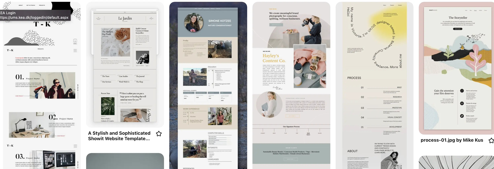

KEA
MMD
FELICIA HETMAN
PORTFOLIOEKSAMEN
1. SEM
2022
Portfolio site
Denne hjemmeside er den første hjemmeside, jeg har kodet uden den store hjælp, andet end hvad jeg selv kunne google mig frem til på W3schools og lignende. Det er jeg stolt af og mange ting er faldet på plads i denne forbindelse.
Jeg startede min idéproces med at kigge på pinterest. Mange af de designs jeg falder over har et meget grafisk design, men jeg føler at det er noget jeg allerede har vist i tema 5. Derfor havde jeg et ønske om at lave et mere stilrent og æstetisk design. Jeg blev inspireret af en billede på pinterest, som havde et old school avis layout, dog med et moderne look. Til dette vidste jeg, at jeg ville bruge en moderne tynd og høj sans serif til h1 og en old style serif til h2 og p. Det er best pratice at holde sig til max 2 forskellige typografier, men jeg besluttede mig for en 3 font i min header, som er en typewriter i overensstemmelse med avis-temaet.
Wireframe
I løbet af de forskellige temaer, havde jeg en tendens til at springe, det at lave wireframes over, og gå direkte til at designe prototypen i XD med alle designvalg. Dette gjorde jeg fordi jeg er meget visuel og havde svært ved at forestille mig sitet uden farvevalg, billeder og reel tekst. Men det har været en god hjælp for mig i dette tema, og jeg har fået øjnene op for fordelene. Jeg brugte mindre tid i XD, inden jeg begyndte at kode, og det skabte et lidt større overblik over layout principper og kompositoriske virkemidler som repetition og rule of thirds. Jeg havde dog også en rimelig klar design idé, hvilket også har gjort, at det har været en noget hurtigere proces i denne omgang.
CSS animation og javaScript
Jeg har på denne hjemmeside inkorporeret CSS animation og javaScript, for at demonstrere, at jeg forstår hvordan disse sprog kan bruges uden for animationsspil. Jeg vil gerne bruge mere af min selvstændige studietid på at udvide min viden inden for javaScript og css animationer for for eksempel at kunne udarbejde en hamburger menu på egen hånd, med egen styling. Lige nu forstår jeg hvad der står, men ønsker en lidt mere smooth menu.
Bæredygtig web
Det er stadig et emne, jeg ønsker mere viden om, men jeg har kørt lighthouse test på min hjemmeside inden jeg komprimerede mone billeder til .webp samt ændret deres størrelse. Der var en klar forbedring efter dette.